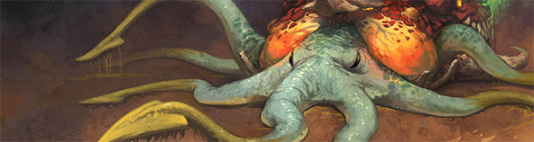
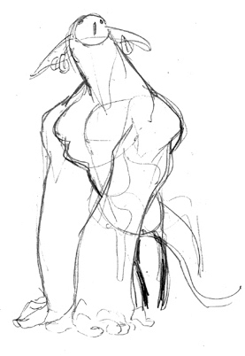
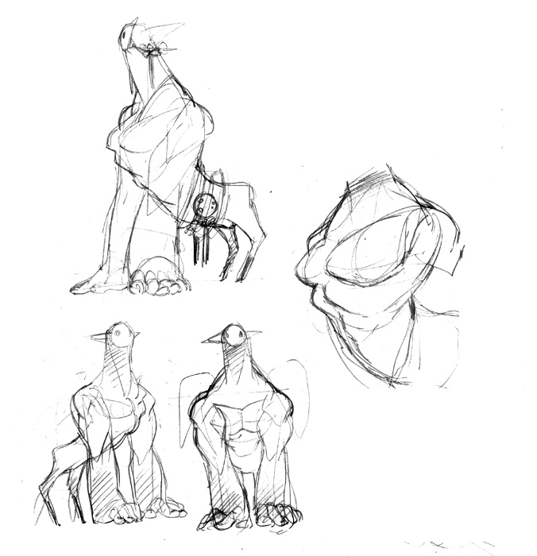
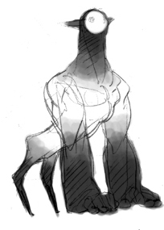
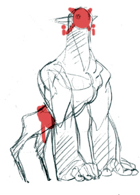
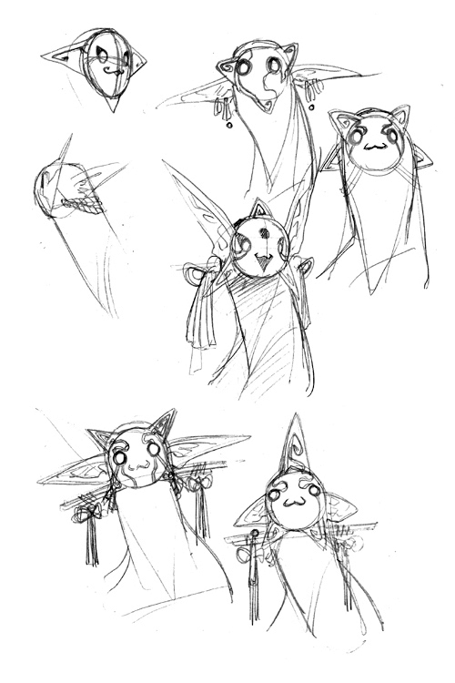
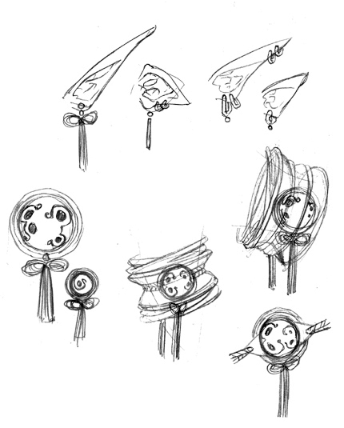
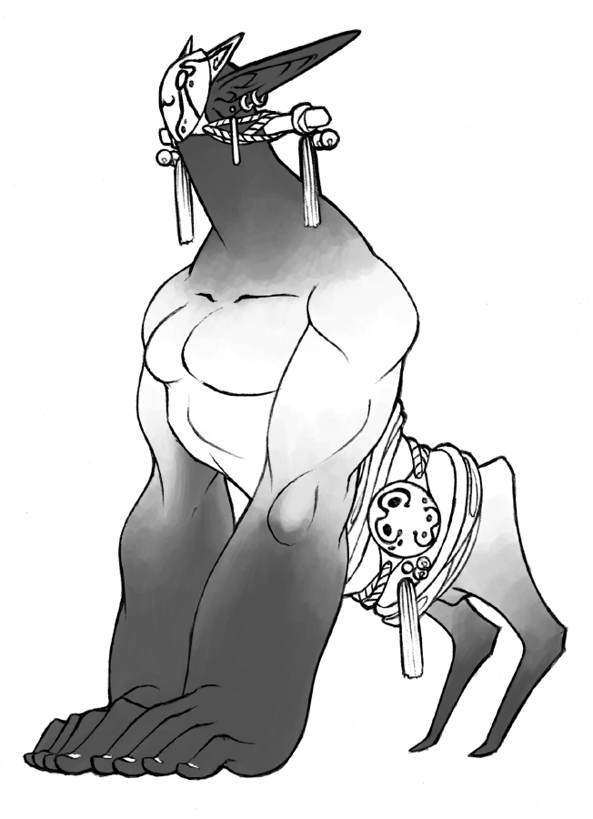
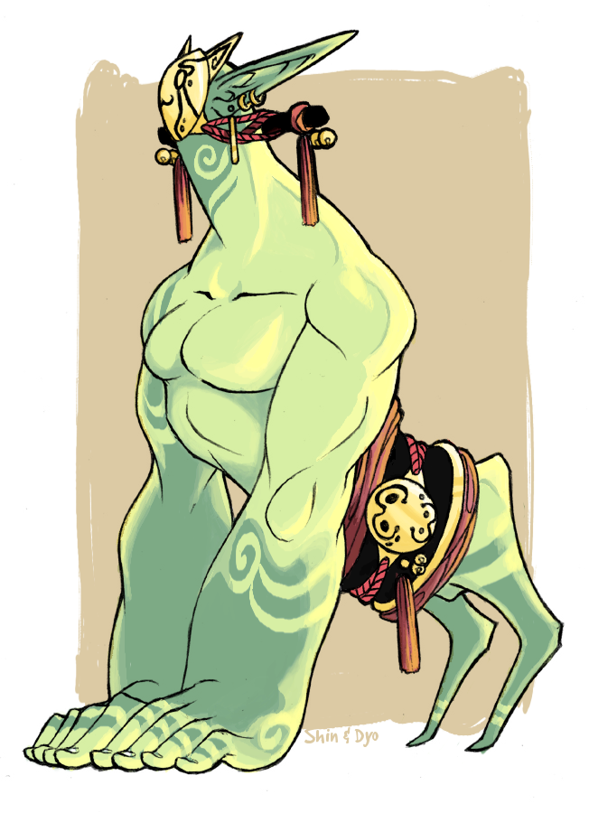

Eléments de Creature Design
Dans un univers de jeu, plus particulièrement dans le RPG, le Creature Design est un élément important. Les monstres, et plus généralement les créatures, donnent corps à l’univers du jeu et se retrouvent partout : villages, forêts, grottes, immeubles, etc. Qui plus est, le joueur risque de s’en farcir un certain nombre tout au long de l’aventure, alors quitte à devoir vaincre quatre cents exemplaires du même gobelin (ou de sa version recolorée avec 20 niveaux en plus :3), autant que ce soit un gobelin superbe et original.

Ce cours, si on peut appeler ça ainsi, vise à expliquer la démarche de questionnement et de recherche nécessaire à la conception d’une créature, d’un monstre ou d’une bestiole (démarche qui peut s’appliquer à d’autres domaines, le Character Design entre autres). Je vais essayer de développer des notions comme les valeurs, les contrastes, etc. Je signale avant toute chose qu’il ne s’agit absolument pas de LA méthode à suivre, mais de la méthode que j’emploie personnellement : elle est parfaitement critiquable, il se peut tout à fait (et c’est quasiment sûr) qu’il y ait mieux et vous n’êtes pas obligés de la suivre. Si vous avez des suggestions à faire pour modifier ou améliorer cet article, je suis toute ouïe :)
Au fur et à mesure de l'article, je vais développer un exemple de Creature Design et essayer de montrer comment il s’est formé, histoire d’illustrer mon propos (ce sont les passages en italiques). J’ai essayé de forcer sur les étapes, histoire que ce soit bien compréhensible, même si je ne le fais pas toujours de façon détaillée. Néanmoins, même s’il n’est pas nécessaire d’avoir chaque étape de l'article en tête, ce qui serait passablement fastidieux, je pense que c’est une bonne chose que de garder cette démarche en tête, dans un coin.
Questionnement préliminaire
L’idéal pour commencer, c’est de savoir dans quelle direction vous voulez partir. Si vous n’êtes pas sûr de ce que vous voulez, essayez de vous poser des questions sur la créature que vous allez concevoir : dans quel environnement va-t-elle évoluer ? Quelles sont les caractéristiques que je veux voir en priorité chez elle ? Quelles dominantes de couleur, quelles textures, quels éléments ai-je envie d’utiliser ?
Ces questions sont de deux natures : d’une part, des questions de logique, qui relèvent de l’utilisation que vous voulez faire de la créature (si elle vit dans l’océan, il semblerait plus approprié qu’elle ait de quoi se mouvoir dans l’eau, comme des nageoires ou des pattes palmées, par exemple), d’autre part, des questions de goût (si vous avez envie qu’elle soit rouge, qu’elle ait une crête punk, etc.).
Si vous avez vraiment des difficultés pour vous lancer, une autre technique est celle de la « ligne folle » : vous gribouillez tout ce qui vous passez par la tête (ou plutôt par le poignet), jusqu’à voir surgir une forme (« Tiens, ce gribouillis informe me fait penser à un sublime dragon-méduse ! »). Une fois passé par cette étape de questionnement préliminaire et que vous tenez un peu mieux votre sujet, vous pouvez vous lancer dans le dessin à proprement parler.
Pour l’exemple, j’ai d’abord cherché de vagues formes, en gribouillant du bout d’un crayon, jusqu’à trouver un truc qui ressemblait à quelque chose d’intéressant. J’ai ensuite essayé de faire le lien avec une créature qui me serait utile pour les besoins de mon scénario : j’ai pu relier la bestiole en question avec un gardien de temple. Les pistes que j’ai gardées sont celles d’un style un peu asiatique, avec des masques blancs, très raffinés, en contraste avec un gros corps très bourrin et assez difforme.

Allure générale
A partir de ce premier croquis, il faut essayer de corriger ce qui ne vous satisfait pas. Bien que le premier jet apparaisse souvent comme le meilleur (car il est plus naturel), il comporte souvent des défauts qui n’apparaissent pas tout de suite à l’œil : dès que vous sentez que quelque chose ne vous convient pas tout à fait, même si vous vous dîtes que « ça pourrait passer », recommencez. En effet, cette sensation sera souvent suivie, dans les mois – voire semaines – qui suivront de la désagréable découverte de défauts dont on ne s’était pas rendu compte au premier regard.
Il est important d’être satisfait de son travail à la fin de cette étape, dans la mesure où elle détermine la structure générale de votre créature, l’allure qu’elle aura au premier coup d’œil, sans faire attention aux détails. C’est à ce moment que des critiques extérieurs peuvent être utiles : même si cela peut sembler désagréable, les autres personnes ont par rapport à notre création un recul que nous n’avons pas, dans la mesure où nous avons, pour ainsi dire, « le nez dans le dessin ». C’est pourquoi il arrive qu’on se rende compte d’un défaut qu’on n’avait pas vu lors de la conception après un certain temps.
Cette première ébauche, qui donne l’allure du dessin, doit avoir deux qualités : d’une part, elle doit être claire, précise. Même si le trait n’est pas très soigné, on doit pouvoir lire sans ambiguïté la structure de la créature. Imaginez-vous que votre création doit pouvoir être modélisée en 3D et que donc tous les détails doivent être pensés (ce qui exclut toute tentative de masquer un détail qu’on n’arrive pas bien à décrire dans sa tête en le cachant :D). D’autre part, le design doit se suffire à lui-même, c’est-à-dire qu’il n’a pas besoin du dessin pour fonctionner. On peut tout à fait être un excellent designer et un dessinateur médiocre (l’inverse aussi d’ailleurs u__u’). C’est pourquoi il faut que, même si le crayonné est sale, le trait tremblant et la technique mauvaise, le design soit efficace.
Une fois que vous tenez votre ébauche, essayez de reproduire votre bestiole sous plusieurs angles, ou même plusieurs fois sous le même angle : il faut que la créature soit cohérente dans votre tête, que vous la pensiez dans votre tête comme si elle était en 3D. Le fait de la dessiner plusieurs fois permet de la « fixer » dans votre tête.
J’ai ici modifié la silhouette de ma bestiole pour mieux coller à l’idée de gardien que je me faisais d’elle : j’ai ôté la queue qui donnait un côté trop animal et j’ai remplacé ses jambes par d’autres qui ressemblent un peu à celle d’un centaure, afin de donner un côté plus noble, plus approprié pour un gardien de temple. J’ai aussi balancé une partie de la masse musculaire sur les bras et réduit les jambes, pour renforcer le contraste entre l’aspect imposant du corps et le côté presque délirant du visage. J’ai fait plusieurs versions de façon à bien voir comment il rendait en 3D et j’ai zoomé sur le torse, histoire d’avoir une vision plus précise (attention, il y a des fautes d’anatomie sur ce dernier que n’excuse pas l’aspect cartoon U__u’). On peut remarquer que j’avais essayé des sortes d’ailes, mais j’y ai renoncé parce que ça gênait la répartition des masses et ça détournait l’attention (cf. suite :) ).

Principe d’équilibre
Ce que je vais développer ici est un principe qui me semble extrêmement utile pour développer cette première version de la créature. J’appelle ça ici principe d’équilibre par commodité, mais ce nom n’est pas forcément le plus approprié et vous en avez peut-être déjà entendu parler sous une autre forme. Le but de ce principe, c’est de savoir « équilibrer » (ou savamment déséquilibrer ;)) les éléments de votre design afin de mettre en valeur ce qui compte dans le dessin. Ce principe d’équilibre peut prendre plusieurs formes :
Les valeurs
Les valeurs, ce sont les zones claires ou foncées du dessin (par exemple, les ombres), ou les niveaux de gris, si vous préférez. Ici, j’écarterai le cas des ombres justement, dans la mesure où elles font partie du dessin et non du design : les valeurs désignent ici les sombres et les clairs liés à la couleur même du monstre. L’idée est qu’il est important de savoir placer ses valeurs de façon à donner de la force au design. Un simple placement des zones suffit, pas la peine de s’attarder sur le travail de l’ombre et de la couleur : ce qui compte, c’est d’avoir des zones sombres et claires (pas des ombres, hein :o) réparties de façon à mettre en valeur l’essentiel du dessin. Il faut que vous ayez un bon contraste pour accrocher l’attention du spectateur : un dessin dont les niveaux de gris seraient uniforme n’a pas beaucoup d’intérêt. Une astuce pour voir si le contraste est bon est de passer l’image en niveaux de gris (Ctrl+Shift+U sous Photoshop) et de comparer avec les niveaux automatiques (Ctrl+Shift+L).
Ici, j’ai voulu mettre en valeur le contraste entre la lourdeur, la force, la brutalité du corps d’une part, et la finesse et la petite taille de la tête d’autre part. C’est pour quoi j’ai laissé le torse blanc au milieu de zones noires : il a l’air bien bombé, bien puissant, il ressort bien. En sombre, les mains ont l’air encore plus lourdes (ceci rajoute en plus l’idée qu’elles sont gonflées de sang, comme nos mains lorsqu’elles semblent lourdes :)). Enfin, le contraste du masque blanc sur le coup sombre fait ressortir de façon très nette la tête et la met en valeur, en contraste avec le corps.

Les détails
Il en va de même pour la répartition des détails, de leur finesse, des textures, des à-plats, etc. Si vous appliquez au dessin le même niveau de détail partout, des textures ultra-fines, l’œil du spectateur ne saura pas où aller, il n’y aura pas de zone qui attirera l’attention plus que d’autre : ceci reviendrait exactement au même que de tout laisser en à-plats, dans la mesure où aucun détail ne ressort plus que les autres au final. Il faut donc choisir de mettre en valeur certaines zones, quitte à en délaisser certaines (je sais, ça fait mal au cœur, surtout quand on a passé beaucoup de temps sur certains détails, mais en design, il faut toujours être prêt à tout virer pour recommencer :/).
Sur l’exemple, j’ai décidé d’accentuer encore plus le contraste masque/corps en mettant des détails au niveau de celui-ci (ainsi que sur la taille où je compte ajouter une ceinture), histoire que l’œil se focalise bien sur la tête (en rouge sur le dessin, mais vous vous en doutiez ;)).

Les masses
Comme j’en avais parlé précédemment, la répartition des masses et des volumes est aussi importante : en choisissant de grossir ou de rétrécir telle ou telle partie de la créature, vous changez l’impression globale qu’elle donne. De plus, si c’est fait sans abus, accentuer les volumes (dans un style un peu cartoon par exemple) permet de donner une meilleur dynamique. Il faut aussi tenir compte des saillies : si une espèce de pic sort à un endroit d’une créature ronde, ce pic sera tout de suite très visible et au centre de l’image. Savoir jouer de la répartition des masses permet de donner une impression forte au spectateur. Attention tout de même, la déformation ne doit jamais se faire au détriment de l’anatomie : vous ne devez pas faire quelque chose de faux anatomiquement (n’importe qui en est capable), mais savoir faire quelque chose de juste anatomiquement et le déformer avec soin (et ça, peu y arrivent bien :/).
Ici, comme indiqué plus haut, j’ai réparti la plupart de la masse dans les bras, de façon à donner une certaine lourdeur à la créature. De plus, le coup en pointe, qui s’achève par la tête, permet d’accentuer la mise en valeur de celle-ci.
Les couleurs
Comme pour les valeurs, pas la peine ici de trop détailler, de simples à-plats sans nuance feront parfaitement l’affaire pour situer les couleurs. Une chose est à retenir selon moi (mais sachez que je suis loin d’être un as de la couleur, faudra demander à Fil :D) : restreignez vous sur le nombre de couleurs (du moins au début). C’est vraiment délicat de gérer beaucoup de couleurs et on tombe dans le mauvais goût. Il vaut mieux se limiter à deux ou trois couleurs bien choisies. Si possible, choisissez une paire de couleurs complémentaires, une couleur et son complémentaire s’accordent toujours bien ensemble (à ce propos, n’oubliez pas la commande Ctrl+Alt+U sous Photoshop, ça peut être utile :)).
Ici, pas de couleurs, je vous renvoie vers Fil, qui vous sera beaucoup plus utile que moi sur ce sujet :).
Détails
Une erreur qui revient souvent à ce niveau là de la conception est de se contenter de finir le croquis en rajoutant quelques petites choses et de lui donner son rendu final. Il ne faut pas s’arrêter, à part dans quelques cas rares où le résultat vous satisfait parfaitement du premier coup (et encore, on se rend généralement compte peu après que ce n’était pas une très bonne idée). Au lieu de se contenter de la simple première version, essayons de pousser la démarche un peu plus loin : il faut essayer de fouiller plus, de voir comment on pourrait améliorer cette première version design.
Il est utile d’essayer de travailler sur les détails et de chercher des variantes (dans l’idéal, 5 versions pour chaque détail important : en réalité, ceci n’est pas faisable, mais il est bon d’avoir au moins deux idées, si possibles assez différentes pour les points importants de la créature). Essayer de ne pas vous cantonner à la première idée qui vous est venue et de ratisser le plus loin possible, même si ce n’est pas ce à quoi vous pensiez au départ. Pour le placement de ceux-ci, n’oubliez pas ce qui a été dit plus haut :D.
J’ai réalisé plusieurs versions des détails qui me semblaient important, à savoir la tête et le masque, les oreilles et les ornements de la ceinture.


Rendu final
C’est après toutes ces étapes de conception que vous pouvez enfin passer à un rendu finalisé. Je vous invite à vous rendre sur d’autres tutoriaux, plus portés sur le rendering que sur celui-ci. Néanmoins, même si le rendering n’est pas le sujet de ce tuto, je ne pouvais pas conclure sans poster une version finale :


Critiques
Un point important, et pas seulement en design – et ça, trop de gens l’oublient – c’est qu’il faut toujours être prêt à se remettre en question. Être ouvert à la critique, même si elle vous paraît injuste. Ce n’est pas parce que vous avez passé 20 heures sur une œuvre que celle-ci est de qualité : vous devez toujours être prêt à tout effacer pour repartir de zéro et ce quelque soit le temps que vous avez déjà passé à travailler. Ceci peut sembler évident, néanmoins, c’est essentiel pour progresser et peu de gens l’appliquent vraiment. Je vous conseille vraiment d’y penser, et s’il n’y avait qu’une seule chose à retenir de ce tuto, c’est ça :).
Pour conclure, j’aimerais juste rappeler que ce tutorial n’est qu’une façon de procéder, la mienne, et pas LA méthode à suivre : il y a sans aucun doute plus efficace et plus intéressant. Si vous avez des suggestions à apporter sur ce tutorial, n’hésitez pas à m’en faire part. En espérant que ça vous sera utile ;)
Image d'ouverture par njoo
Ajouter un commentaire
Commentaires

Je suis plutôt spécialisé dans le dessin de personnages (en amateur mais j'adore ça!) mais lire ce tutoriel me donne envie de dessiner des créatures pour changer, surtout que je suis un fan de RPG et que j'ai parfois quelques idées qui me trottent dans la tête. Reste plus qu'à apprendre à me servir de Photoshop… Et pour le gardien de temple bravo, il est chouette!
Pas mal ce tutoriel !
Mais de ce que je sais, c'est pas les masses qu'il faut colorier mais les ombres :
http://www.fr.livingtuts.com/photoshop/concept-art-character-design-from-little-story-telling/
Merci.
--Yarflam
Pour l'inspiration je pense qu'il faut chercher une source dans les animaux de la vie réelle, ou dans la mythologie, les légendes, autres jeux vidéos…
--l0lmanPH